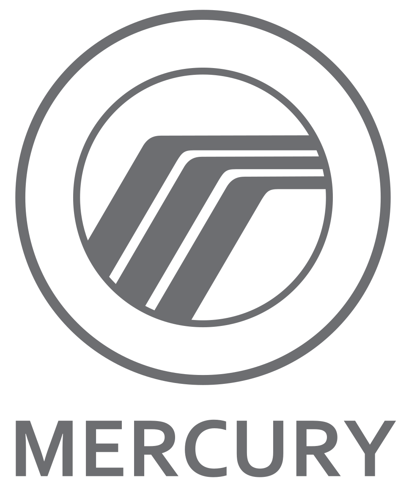

머큐리 Mercury
머큐리(Mercury)는 미국 포드 모터 컴퍼니가 링컨 아래 단계로 판매했던 고급 자동차 브랜드이다. 포드와 링컨의 중간 성격을 가졌으며 2011년 1월 마지막 생산을 끝으로 사라졌다.
최종 업데이트

머큐리는 어떤 브랜드인가
머큐리는 포드 모터 컴퍼니가 링컨 아래 단계에 두고 판매한 고급 자동차 브랜드였다. 포드와 링컨의 중간 브랜드 성격이었으며, 제네럴 모터스의 고급 브랜드인 뷰익과 비슷한 성격이었다.
2000년대 들어 판매대수가 계속 감소했고, 포드 모터 컴퍼니는 2010년 5월 머큐리 브랜드의 폐기를 공식 선언했다. 2011년 1월 4일 마지막 생산분인 그랜드 마퀴스를 끝으로 브랜드는 사라졌다.
현재 머큐리 생산 라인은 링컨의 생산 라인으로 모두 대체되었다. 대한민국에서는 기아자동차가 포드 모터 컴퍼니와 제휴했을 때 세이블 모델이 1986년부터 1996년까지 판매되었다.
머큐리는 어떻게 시작되고 성장했나
머큐리는 1938년 포드 모터 컴퍼니 설립자 헨리 포드의 아들인 에드셀 포드가 설립했다. 포드와 링컨의 중간 브랜드로 자리했고, 제네럴 모터스의 뷰익과 비슷한 성격이었다.
2000년대에는 판매대수가 계속 감소했고, 이를 만회하려고 밀란, 마리너 등의 신차와 하이브리드 차량을 출시해 판매했다. 2010년 5월 포드 모터 컴퍼니는 머큐리 브랜드의 폐기를 공식 선언했다.
같은 해 말 밀란, 그랜드 마퀴스, 마리너, 마운티너 등 4개 모델이 단종되어 생산이 중단되었다.
머큐리의 브랜드 아이덴티티는 무엇인가
포드와 링컨의 중간에 놓인 포드 모터 컴퍼니의 고급 브랜드로, 제네럴 모터스의 뷰익과 비슷한 성격이었으나 2011년 1월 생산이 끝났다.
머큐리의 대표 제품과 서비스는 무엇인가
판매했던 모델은 세단과 스포츠카, SUV·승합으로 나뉜다. 세단과 스포츠카 쪽에는 미스틱, 머라우더, 그랜드 마퀴스, 세이블, 몬테고, 밀란, 쿠거가 있었다.
SUV·승합에는 빌리져, 몬테레이, 마리너, 마운티니어가 있었으며, 몬테레이는 포드 프리스타의 형제차인 미니밴이다. 대한민국에서는 기아자동차가 포드 모터 컴퍼니와 제휴했을 때 중형 세단인 세이블을 1986년부터 1996년까지 대형 세단 링컨 컨티넨탈(링컨 타운카)과 함께 기아자동차 브랜드로 OEM 방식으로 수입 및 국내생산으로 판매했다.
그랜드 마퀴스도 1990년대에 병행 수입업체를 통해 대한민국에서 판매되었다.
머큐리는 지금 어떤 상태인가
포드 모터 컴퍼니는 2010년 5월 머큐리 브랜드의 폐기를 공식 선언했고, 2010년 말 밀란, 그랜드 마퀴스, 마리너, 마운티너 4개 모델을 단종하고 생산을 중단했다. 2011년 1월 4일 마지막 생산분인 그랜드 마퀴스를 끝으로 브랜드는 사라졌다.
현재 머큐리 생산 라인은 링컨의 생산 라인으로 모두 대체되었다.
머큐리 로고는 어떻게 변해왔나
자주 묻는 질문
머큐리는 어느 나라 브랜드인가요?
머큐리는 미국의 모빌리티 브랜드입니다.
머큐리는 언제 설립되었나요?
머큐리는 1939년 설립되었습니다.
머큐리의 브랜드 아이덴티티는 무엇인가요?
포드와 링컨의 중간에 놓인 포드 모터 컴퍼니의 고급 브랜드로, 제네럴 모터스의 뷰익과 비슷한 성격이었으나 2011년 1월 생산이 끝났다.
머큐리의 대표 제품은 무엇인가요?
판매했던 모델은 세단과 스포츠카, SUV·승합으로 나뉜다.
머큐리는 현재 어떤 상태인가요?
포드 모터 컴퍼니는 2010년 5월 머큐리 브랜드의 폐기를 공식 선언했고, 2010년 말 밀란, 그랜드 마퀴스, 마리너, 마운티너 4개 모델을 단종하고 생산을 중단했다.
머큐리의 창업자는 누구인가요?
머큐리의 창업자는 Edsel Bryant Ford입니다(위키데이터 기준).
머큐리의 본사는 어디에 있나요?
머큐리의 본사는 디어본에 있습니다(위키데이터 기준).
출처와 검증
머큐리 관련 참고: 위키데이터 Q613883 · 한국어 위키백과 · 영어 위키백과. 브랜드명은 한글과 원어를 함께 표기하되 데이터에 없는 표기는 만들지 않습니다. 기원 국가·설립연도는 검수된 정의문에서 확인된 값을 우선하고, 없을 때만 공식 웹사이트 URL이 일치하는 위키데이터 개체의 값을 씁니다. 위키데이터 값은 2026-10-18 기준입니다.